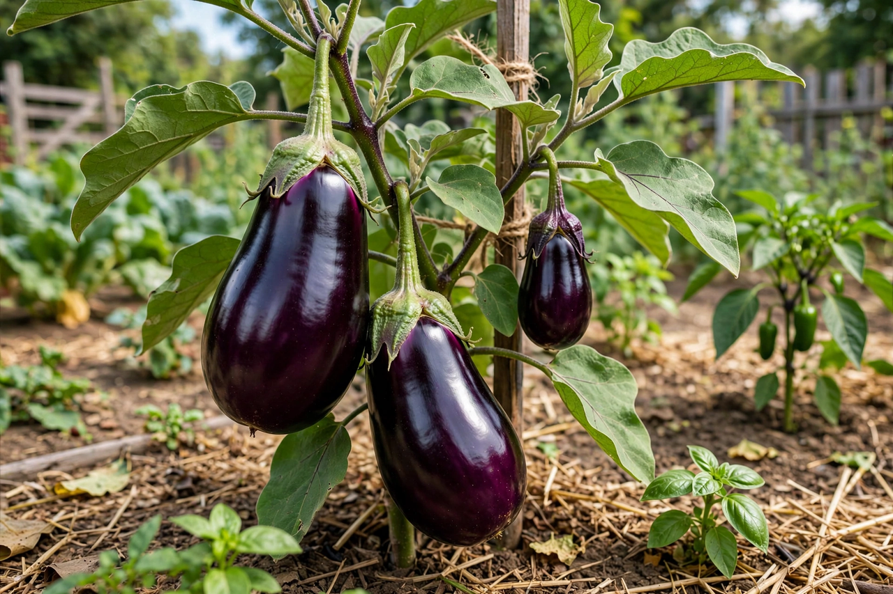

Eggplant
From Wikipedia, the free encyclopedia

The eggplant (Solanum melongena), called aubergine in British English, is a berry of the nightshade family, kin to the tomato and potato, grown for its large, glossy fruit — classically deep purple and teardrop-shaped, but also white, striped, green, and pencil-thin in Asian varieties. It was domesticated in Asia (India and China both hold early claims), travelled west with Arab traders — the name aubergine descends from Arabic al-bādhinjān via Catalan — and was suspected in medieval Europe (the Italian melanzana was folk-read as mela insana, "mad apple") before becoming central to Mediterranean, Middle Eastern and South Asian cooking. China is the largest producer.
Character and cooking
Raw eggplant is spongy and slightly bitter, full of air pockets that drink up oil; cooking collapses the structure into silk. Salting and draining — the classic first step — was prescribed against bitterness, though modern varieties are bred mild and cooks now salt mainly to season and improve texture. Eggplant is almost never the point alone; it is a carrier of smoke, oil and spice: charred whole into baba ghanoush and baingan bharta, fried into Parmigiana and Sichuan fish-fragrant eggplant, stewed into ratatouille and caponata, stuffed as imam bayildi ("the imam fainted" — with pleasure or, in the rival story, at the cost of the oil). Turkey's repertoire alone is said, with pardonable exaggeration, to hold a thousand eggplant dishes.
Varieties
Globe eggplants serve Mediterranean cooking; long Japanese and Chinese types stir-fry without bitterness; Thai pea and apple eggplants go raw into salads and curries; white varieties explain the English name — 18th-century ornamental plants bore fruit like hens' eggs. As with many nightshades, the leaves are not eaten, but the ripe fruit's trace nicotine — often reported as equivalent to passive smoking in headlines — is negligible in any normal serving.